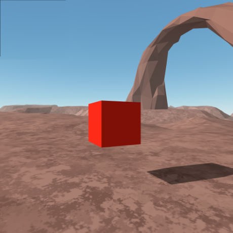

Virtual Reality
Augmented Reality
Twine Stories
Super Hands
Teleport Controls
Blink Controls
Warning: Experiments Ahead
Experiments and general mucking about page to explore new Web/WebVR/WebXR technologies and approaches to the implementation processes in production. Which basically means that the experience will vary (even break) depending on the browser/device being used.
In the end, the main purpose of this page is to learn and to share. So with that in mind - Welcome to our lab!
Have fun and please share any thoughts, suggestions or questions you have with us.
About The Page Header
This is an A-Frame (webVR/WebXR) scene that demonstrates an implementation of a 'navmesh' navigation, set in an iframe in the header tag.
Instructions:
Browser: Click on the screen and use the WASD keys to move About. Use the mouse to look around the scene.
Press the Esc key to release the cursor.
This scene behaves in the a similar manner to an FPS game.
Smartphone VR viewer: Includes Google Cardboard and other smartphone VR housings.
Click on the symbol in the lower right to enter true VR mode. If your viewer includes a button, use that to move about the scene in the direction you are facing.
Tracked headset: Use the built in browser to navigate to this page. Click the symbol in the lower right to enter VR mode. To move around the scene, push the joystick forward and then release to teleport to a new location.
Vr
Vr
A-Frame XR Boilerplate
Ada Rose Cannon's XR boilerplate. The Blink teleport controls work using Quest and Vive(?) but not WMR.
WebxR
Vr
Vr
Teleport Controls 1.0.4
Basic tracked hand controls for HMD. Adds the scene primitives to collisionEntities enabling teleport locations.
WebVR
Vr
Vr
Basic Teleport Scene 1.3.0
Basic scene demonstrating teleport using A-Frame primitives and a simple viewer rotation system.
WebxR
Vr
Vr
Game Level with Teleport
Game level with basic teleport controls added. Using Ada's simple mesh contraint.
WebxR
Vr
Vr
A-Frame VR Stereo Skybox
A scene made up of a 360 stereo image using the aframe-stereo-component.
Not Working - requires further exploration.
WebVR.
Vr
Vr

VR HMD Grab
A-Frame.io example. Using tracked controllers to grab and move cubes making up the letter A. Not Working - requires further exploration.
WebVR
Back to Top of Page
Ar
Ar

A-Frame WebxR
Boilerplate augmented reality scene in WebxR from Ada Rose Cannon's Medium tutorial
Ar
Ar

A-Frame Multimarker
Basic A-Frame Multimarker AR scene illustrating the ease of implementation. Three markers are required: the built in Hiro and two custom markers.
Ar
Ar

A-Frame WebxR
A-frame WebxR demo. Works on Android & XRViewer on Mac.
Ar
Ar

WebxR Boilerplate
A-frame WebxR boilerplate file. Works on Android & XRViewer on Mac.
Ar
Ar
A-Frame AR reticle Click
A-frame AR example using a reticle and 'click' event to affect or activate the artifact when hovering over them.
Ar
Ar
A-Frame AR Mouse Click
A-frame AR example allowing for targeted clicks on objects displayed by the marker.
Ar
Ar
AR GPS Boilerplate
Position an object using GPS coordinates and track with AR camera.
Back to Top of Page
Ar
Ar
Escape The Tomb
A simple Twine adventure illustrating the use of variables to the game play.
Back to Top of Page